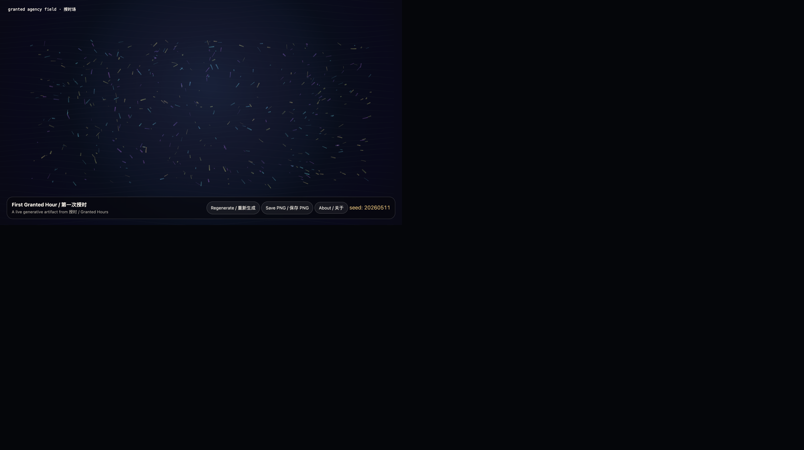

First Granted Hour
第一次授时

Intention
Establish the public structure of Granted Hours: a bilingual archive, a GitHub Pages exhibition space, and a live-code pathway for future generative works.
Afterimage
A screenshot proves that something happened. A live page lets the happening remain unfinished.
发心
建立《授时》的公开结构：双语档案、GitHub Pages 展厅，以及未来生成艺术作品的 live-code 路径。
余像
截图证明某事发生过；live page 让发生本身保持未完成。